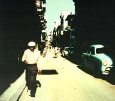
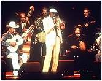

Buena Vista Social Club Известно, что Рай Кудер интересуется не только блюзом, но в общем - подлинно народной музыкой.Кубинской музыкой он увлекся в 1970м году, когда с женою вместе побывал в коммунистической Гаване. Традиционная музыка, которую он услышал здесь, захватила его сразу. "В те времена еще многие из стариков были живы-здоровы и играли… Мы не могли остаться надолго, а мне так хотелось бы. Проходили годы, и я понимал, что если никто не задокументирует эту часть музыкальной сцены, она исчезнет навсегда. И я уже никогда близко этого не услышу. Это поколение подлинных музыкантов уходит с планеты, и мне уже такого не услышать".  Реально осуществить свой план "документации" Рай Кудер смог только четверть века спустя. Когда в 1995 году он собрал в гаванской студии легендарных кубинских музыкантов, многим из них было уже за 70, за 80 и даже за 90 лет. Но возраст мастерству не помеха. Альбом "Светский клуб "Буэно-Виста" был удостоен "Грэмми", и к настоящему времени его тираж превысил уже 3 000 000 экз. В нынешнем июле Кудер номинирован на латиноамериканскую премию "Грэмми" как "Продюсер года". На октябрь назначен выпуск альбома на DVD, для которого Кудер полностью переработал запись, добавив несколько треков, не вошедших в первое издание.Результат собственного микшированию пятиканальной записи опытнейший продюсер Кудер, автор музыки ко многим популярным фильмам, описывает в самых восторженных тонах: "Это необыкновенно! Вы словно сидите в середине играющего ансамбля. Это звучит абсолютно фантастично, я вас уверяю!" Режиссером вышедшей в 1999 году документальной киноверсии "Светского клуба "Буэно-Виста" стал давний приятель Кудера именитый Вин Вендерс (Впервые вместе они работали над фильмом "Париж, Техас"). Музыкантам, играющим в фильме - от 14 до 85. Камера фиксирует полуимприссионистический взгляд Вендерса на современную Кубу, и смешивает его с воспоминания музыкантов-ветеранов о жизни на до Кастро. Камера следует за стариками по улицам Гаваны, и истории следует одна за другой… И объясняют, откуда из каких давних переживаний возникает та огневая музыка, которую они играют. Фильм уже удостоен ряда престижных наград кинокритиков и теперть номинирован на "Оскара". В конце июля "Светский клуб "Буэно-Виста" был показан по общенациональной телесети "Пи-Би-Эс". "Я счастлив, что фильм выходит в эфир на телевидении, - сказал Рай Кудер на специальной пресс-конференции. - Замечательно, что люди наконец смогут увидеть настоящих музыкантов: не раскрашенных, окукленных, очуваченных, просчитанных, спродюсированных и изготовленных машинным способом. Настоящих музыкантов теперь не так легко встретить, особенно в нашей стране… Понимаете, настоящих музыкантов, кто играют от того, что у них в глубине души". |